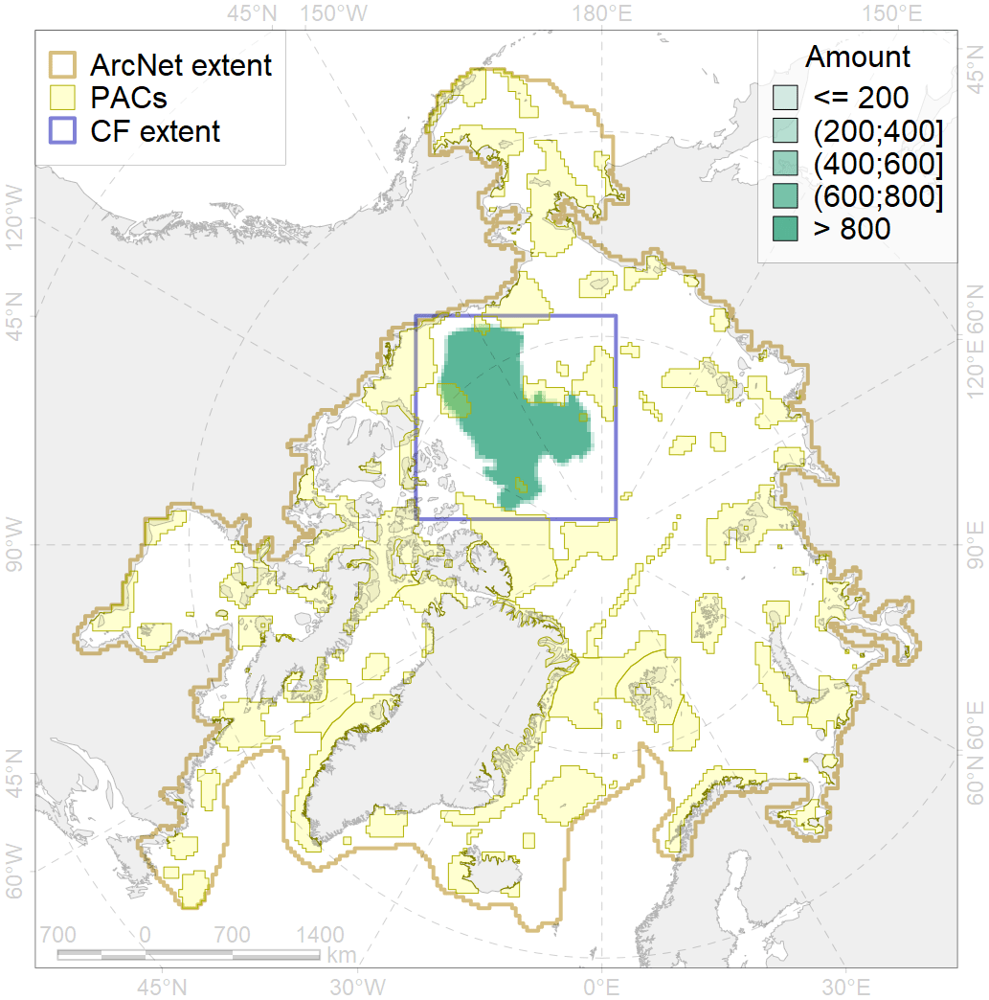
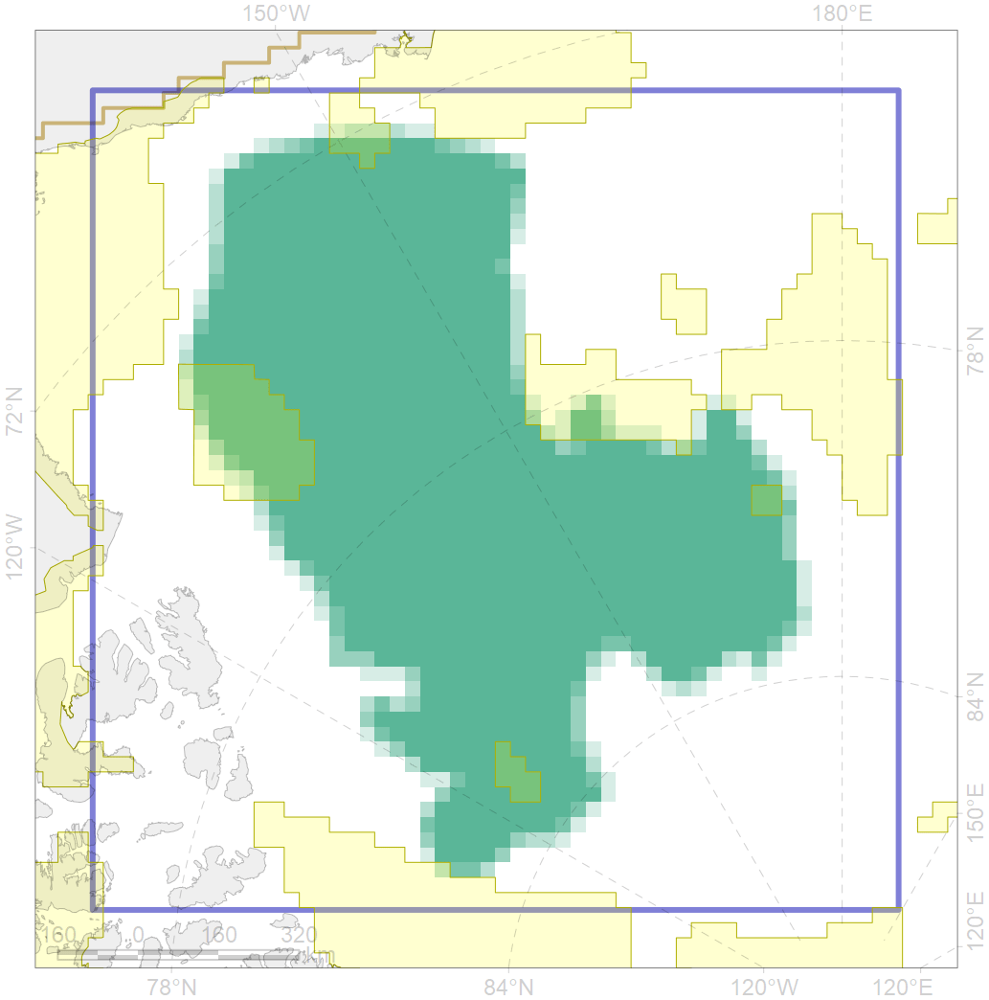

7023

| CF ID | 7023 |
| CF Name | Canada Basin abyssal region |
| Time Period | 1900-2010 |
| Source(s) | Spiridonov et al., in prep. |
| Seasonality | January - December |
| Depth Horizon | Sea floor |
| Methodology | Boundaries derived from biogeographic regionalization scheme, which is in preparation for publication |
| Author Name | V. Spiridonov |
| Notes | |
| Conservation Target Set in the Scenario | 0.07893529 |
| Conservation Target Achieved in the Scenario | 0.082 (Scenario: 103.2%) |
| PAC ID | Proportion in the PAC | Contribution to ArcNet Target Achievement | PAC’s Contribution to the Achieved Target |
|---|---|---|---|
| 54 | 0.0% | 0.5% | 0.5% |
| 57 | 1.1% | 13.9% | 13.5% |
| 58 | 0.8% | 9.7% | 9.4% |
| 59 | 4.5% | 47.3% | 45.8% |
| 60 | 0.6% | 4.0% | 3.9% |
| inner | 7.0% | 75.4% | 73.1% |
| outer | 93.0% | 27.8% | 26.9% |